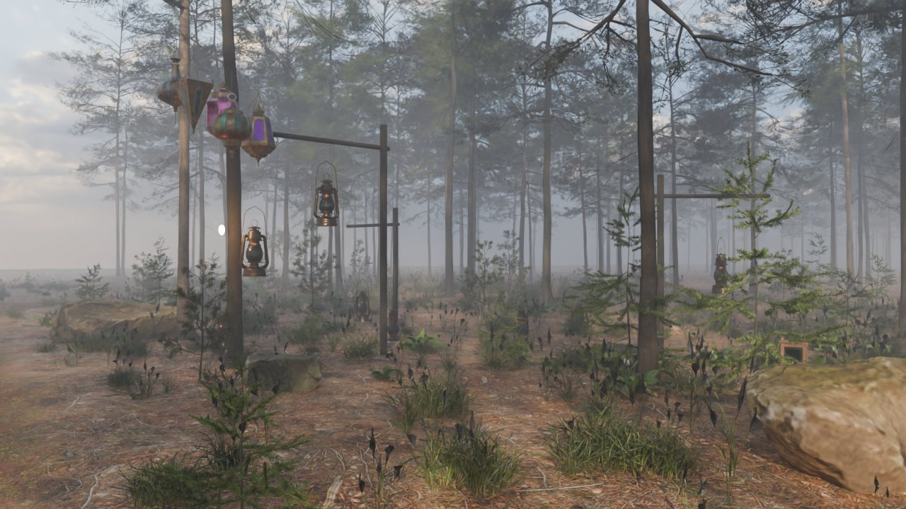
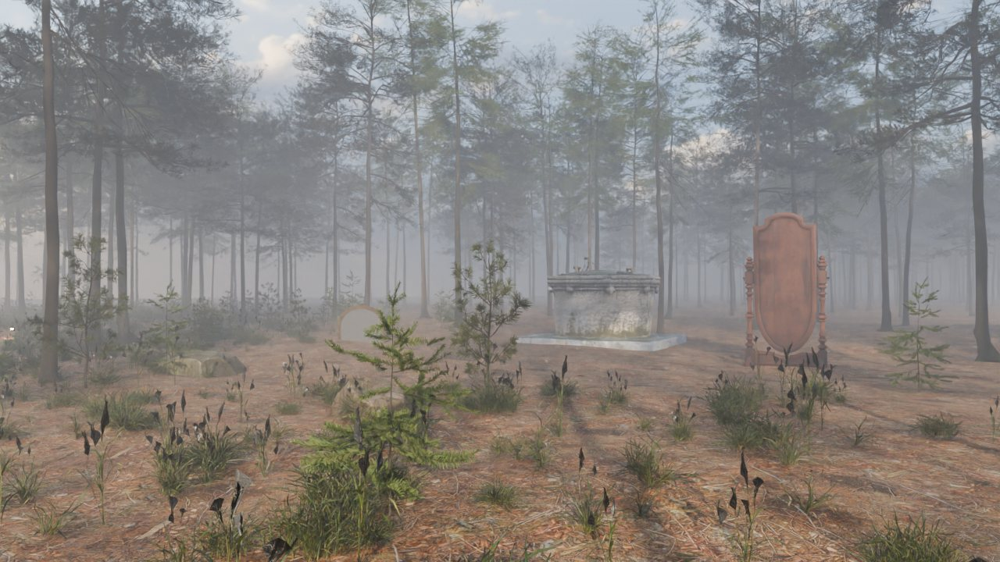
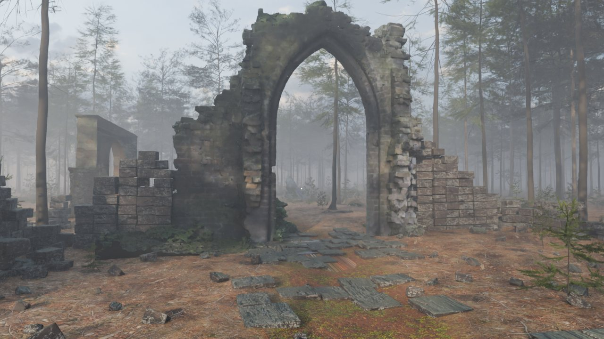
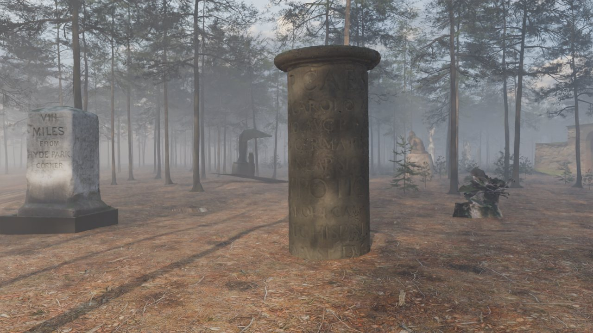
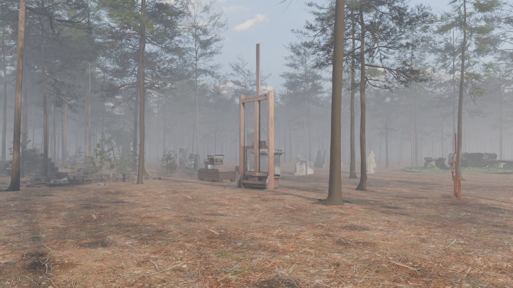
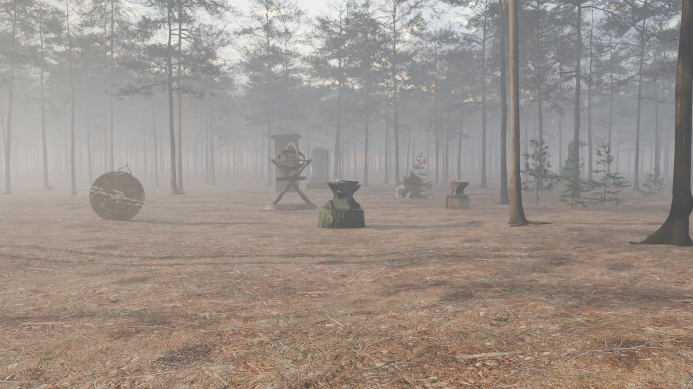

Everything behind the forest, without the walk.

Front doors built for other people: a staffing firm, an agency, a professor, a pilgrimage. One lantern each.

The portfolios this site replaced, kept as they were.

Websites that tell something as you move through them: scroll, orbit, listen.
Things to play, in the browser, with nothing to install.

Where I have worked, and what was built there.

Drawings, mathematics made visible, and words.

Things built to be used: editors, solvers, converters and the small services that keep the rest running.